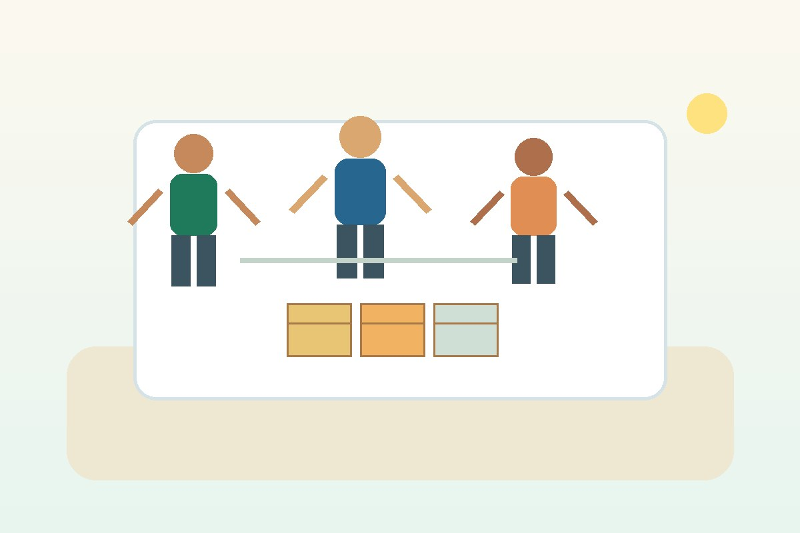
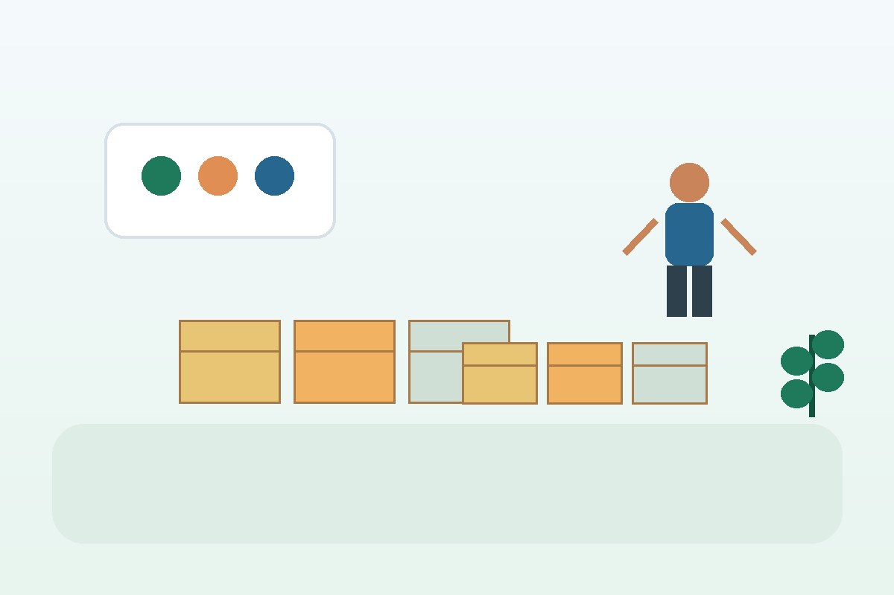
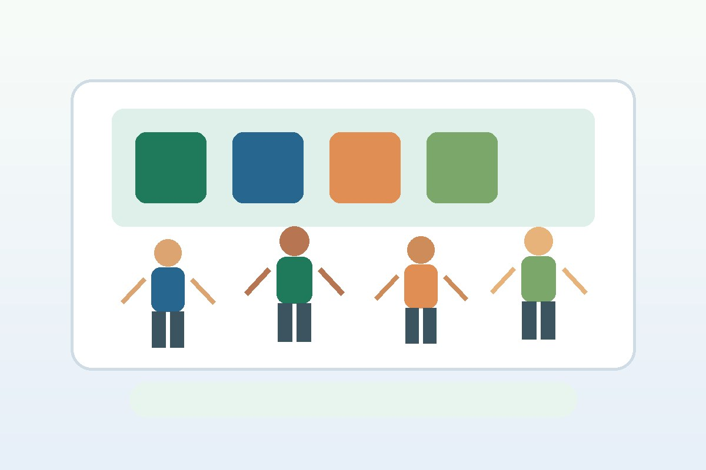

Voluntariado
O voluntariado reúne pessoas interessadas em apoiar oficinas, campanhas, triagens e ações de acolhimento.
- Participação em mutirões sociais.
- Apoio na organização de eventos.
- Auxílio em atividades educativas.
Frentes de atuação
Conheça as principais formas de envolvimento com a ONG e veja como sua contribuição pode ajudar a manter as ações comunitárias em andamento.

O voluntariado reúne pessoas interessadas em apoiar oficinas, campanhas, triagens e ações de acolhimento.

As campanhas arrecadam alimentos, roupas, materiais escolares e contribuições financeiras para manter os projetos ativos.

As oficinas educativas fortalecem o aprendizado, a cidadania e a inclusão social de crianças, jovens e famílias atendidas.
O usuário pode escolher entre realizar uma contribuição financeira, doar materiais ou se cadastrar como voluntário. A página foi dividida em blocos para facilitar a decisão e direcionar cada pessoa à forma de participação mais adequada.
Preencher cadastro